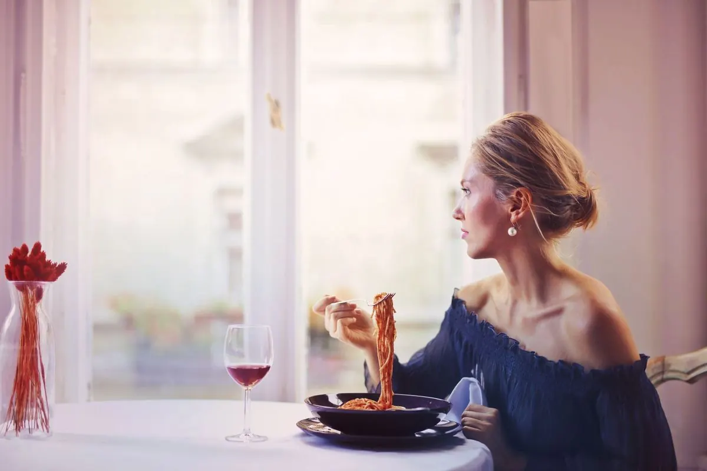

Otvorené oči pre ostatných
Keď cestuješ sám/sama, začneš si všímať, koľko sólo cestovateľov je okolo teba. Je ich prekvapivo veľa a spoznať ich je tisíckrát ľahšie, než keď si uzavretý/á v skupinke kamošov.
Sólo cestovanie · Lucia
Lucia hovorí o tom, ako jej trocha odvahy na sólo dovolenke prinieslo najlepší zážitok večera
Na sólo cestovaní milujem najviac tú absolútnu slobodu. Žiadne kompromisy o tom, kedy sa vstáva, kam sa ide jesť alebo či strávime popoludnie v galérii alebo na pláži. Si jednoducho vo vlastnom flow. Najčastejšia otázka, ktorú však od kamošov dostávam, znie: „A to ti nie je trápne sedieť sama v reštaurácii na večeri?“
Mala som obdobie (dávnejšie), kedy som si myslela, že to bude nepríjemné. Čím viac však chodím sama, tým je to lepšie a prirodzenejšie. A presne o tom je aj jedna vtipná príhoda z prímorského mestečka…

Príbeh pri dverách reštaurácie
Vyhliadla som si skvelú reštauráciu s morskými plodmi – vysoké hodnotenia, letná terasa, teplý večer, dokonalý prímorský vibe. Chvíľku som čakala v rade. Predo mnou stál chalan, tiež sám.
Keď prišla obsluha, chalanovi predo mnou povedali, že ho usadia o minútku. Mne však čašník s úsmevom oznámil: „Pre vás stôl nemáme, musíte čakať asi 20 minút.“
V prvej sekunde mi prebleskol v hlave scenár: Otočím sa a idem preč. Ale potom som sa pozrela na ten úžasný tanier s morskými plodmi na vedľajšom stole a povedala som si – nie, toto jedlo varia len tu a ja ho chcem!
Použila som trocha odvahy, podišla k chalanovi predo mnou a hovorím mu: „Prepáč, počula som, že si tiež sám. Môžem si k tebe prisadnúť? Hrozne sa teším na ich morské plody a nechce sa mi čakať 20 minút.“
Jeho reakcia? Bol absolútne nadšený! „Jasné, poď, budem veľmi rád!“ Nakoniec sme spolu prekecali viac ako hodinu, prezradil mi najlepšie lokálne miesta, kam sa oplatí pozrieť, a bol z toho jeden z najlepších večerov celého výletu.
Chcelo to len tri sekundy odvahy.
Keď cestuješ sám/sama, začneš si všímať, koľko sólo cestovateľov je okolo teba. Je ich prekvapivo veľa a spoznať ich je tisíckrát ľahšie, než keď si uzavretý/á v skupinke kamošov.
Ten pocit po návrate domov je neopísateľný. V kufri si okrem spomienok nesieš vedomie, že si to zvládla úplne sama, spoznala skvelých ľudí a videla miesta, kde by si sa s partiou nikdy neocitla.
Sólo cestovanie z teba zmyje obavy a strachy. Zistíš, že si dokážeš vytvoriť skvelý program aj sama so sebou – a do budúceho vzťahu potom nevstupuješ zo zúfalstva, ale ako vyrovnaný človek, ktorý hľadá parťáka, nie záchranu.
Ak stále čakáš, kým bude mať niekto z tvojho okolia čas, peniaze alebo chuť vyraziť – vykašli sa na to. Cestuj aj sám/sama. Je to obrovská pridaná hodnota pre tvoj život aj pre tvoje budúce vzťahy.
💡 Chceš si vyskúšať ten skvelý pocit zo spoznávania nových ľudí v uvoľnenej atmosfére bez záväzkov? Poď s nami na najbližší unwaiting TRIP! Vyrazíme ako skupina jednotlivcov a vrátime sa ako partia, kde nikto nemusí riešiť, s kým prišiel.